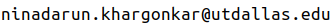

Abstract
We introduce a neural implicit representation for grasps of objects from multiple robotic hands. Different grasps across multiple robotic hands are encoded into a shared latent space. Each latent vector is learned to decode to the 3D shape of an object and the 3D shape of a robotic hand in a grasping pose in terms of the signed distance functions of the two 3D shapes. In addition, the distance metric in the latent space is learned to preserve the similarity between grasps across different robotic hands, where the similarity of grasps is defined according to contact regions of the robotic hands. This property enables our method to transfer grasps between different grippers including a human hand, and grasp transfer has the potential to share grasping skills between robots and enable robots to learn grasping skills from humans. Furthermore, the encoded signed distance functions of objects and grasps in our implicit representation can be used for 6D object pose estimation with grasping contact optimization from partial point clouds, which enables robotic grasping in the real world.
Paper
Citing NeuralGrasps
Please consider citing the paper if it helps in your research:
@misc{https://doi.org/10.48550/arxiv.2207.02959,
doi = {10.48550/ARXIV.2207.02959},
url = {https://arxiv.org/abs/2207.02959},
author = {Khargonkar, Ninad and Song, Neil and Xu, Zesheng and Prabhakaran, Balakrishnan and Xiang, Yu},
title = {NeuralGrasps: Learning Implicit Representations for Grasps of Multiple Robotic Hands},
publisher = {arXiv},
year = {2022},
copyright = {Creative Commons Attribution 4.0 International}
}
Dataset
NeuralGrasps dataset is licensed under MIT license.
Download link: NeuralGrasps-Dataset
Please see the associated code repository for modifying and using the dataset for your own models.
Code

Contact
Send any comments or questions to Ninad Khargonkar: 
Last updated on 18-July-2022 | Template adapted from: dex-ycb.github.io